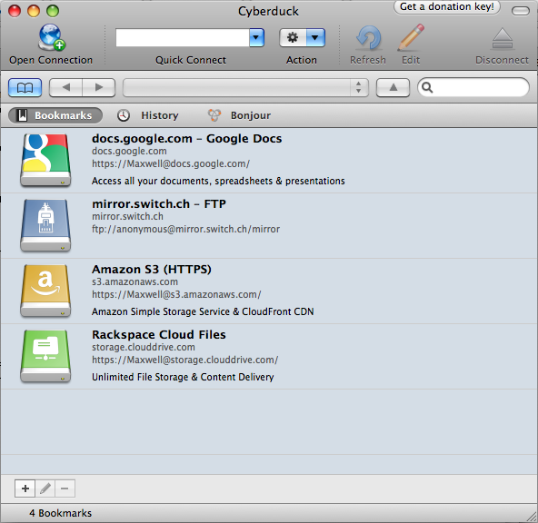
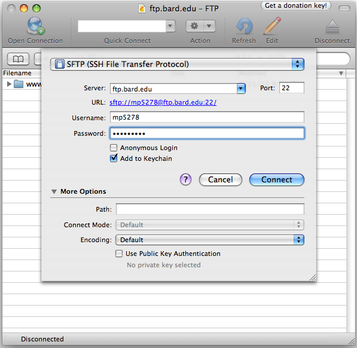
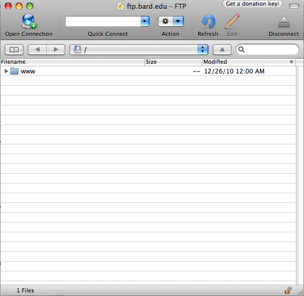
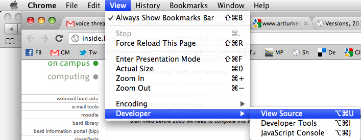
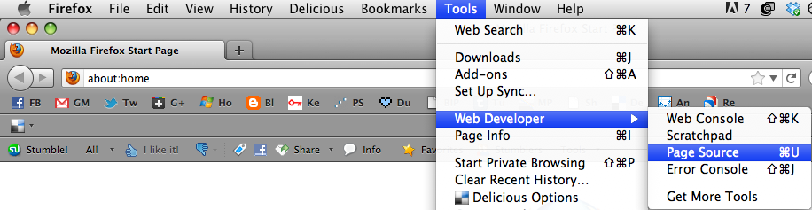
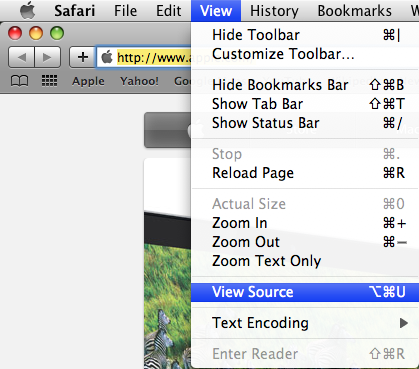
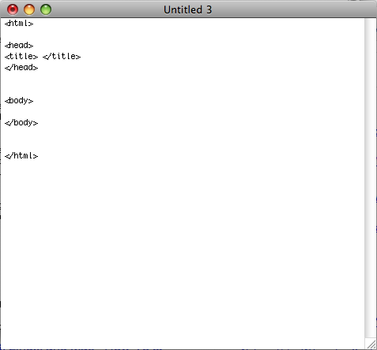
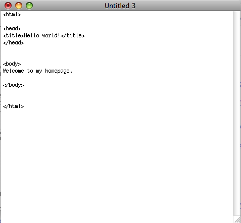
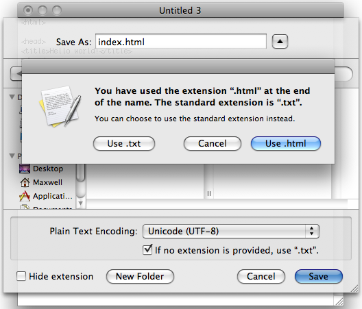

How To Make A Great Homepage
a quick and dirty guide
NOTE: this guide is intended for a total HTML novice. If you already know your way around FTP clients and hand coding HTML, dive right in and start coding. But your homepage MUST BE HAND CODED. Don't use Dreamweaver or Microsoft Word or anything else besides a raw text editor for this assignment. The goal is not to make something slick and fancy, but to make something messy and fun and totally yours.
1. Getting The FTParty Started
The first thing you'll need to do in preparation for making your homepage is download an FTP (File Transfer Protocol) client and log-in to your Bard server space.
Go to cyberduck.ch and download Cyberduck. This is a good FTP client, it's free and works for both Mac and PC.
Open it or unzip it or drag it or whatever you usually do with fun new programs. Just do your thing and get it going.
You hopefully are seeing a screen that looks pretty much like this (below). Click "Open Connection" in the top left corner.

Now you're seeing something like this (below). Make sure "SFTP (SSH File Transfer Protocol)" is selected in the top menu.

Next to "Server," write "ftp.bard.edu"
Use your Bard email username and password for the next two fields.
Click "Connect."

You're in! This is the 'back end' of your Bard website. That "www" folder is where the files that make up your homepage will go. But not yet! First we've got to get down and dirty with some code.
NOTE: if something went wrong for you in this first step and you're not seeing this screen, send me an email at mp5278 -at- bard -dot- edu explaining the problem, including screencaps if possible. Then continue on to the next section, writing your page's code. You won't be able to upload it just yet, but don't worry, we'll get it sorted out.
2. Up To Your Elbows In Code
This is where the magic happens. Learning the basics of the HTML coding language, you'll write your homepage by hand in a basic text editor. As you get more familiar with HTML, you'll be able to make your page really feel like home.
You don't see too many webpages coded by hand anymore, but this webpage that you're on right now is one of them. To get an idea of the basic formatting attributes of HTML, you can view the source code of this or any webpage. Let's start there.
In Chrome, you can view the source code of any webpage by going to "View > Developer > View Source" (pictured below)

In Firefox, you can view the source code of any webpage by going to "Tools > Web Developer > Page Source" (pictured below)

In Safari, you can view the source code of any webpage by going to "View > View Source" (pictured below)

So pull up the source code of this webpage and look at it side-by-side with the webpage itself. I have added a few notes to the code to try to explain what each element is doing. It might look a little daunting at the moment, but you'll get the hang of it in no time.
After you're done looking over the source code a little, it's time to start writing your own. Open a basic text editing program. On Mac, the default text editor is called TextEdit. On Windows, it's Notepad. DO NOT use Microsoft Word, OpenOffice, or any other advanced word processing program. These are no good for hand-coding html. They come with a lot of formatting defaults built in, and that can really mess up your code.

The above screenshot shows the bare bones of any HTML webpage without any of the content. Plugging these couple lines into your own blank text document is a good way to begin coding a new page.

For the time being, just make a text document that looks exactly like the one above.
Save it as "index.html"

Your text editor will probably ask you if you're sure you want to save it as an HTML page. Yes, you're sure.
3. Hello World!
Now for the final step, uploading the .html file you just created to the world wide web!
Pull up Cyberduck again. Find your index.html file on your computer and drop it into the Cyberduck window. You'll see it appear in the main window after it's done uploading.
Drag and drop your index.html file into the "www" folder. This publishes it to the web.
Now go visit your homepage! Its address will be "http://www.student.bard.edu/~your-user-name" (don't forget the ~tilde!)
To learn how to get the most out of your text on a webpage, visit The Text Page and view its source.
Once you're ready to add a background, images, videos, music, and animations, visit The Multimedia Page and view its source.
Back To The Top